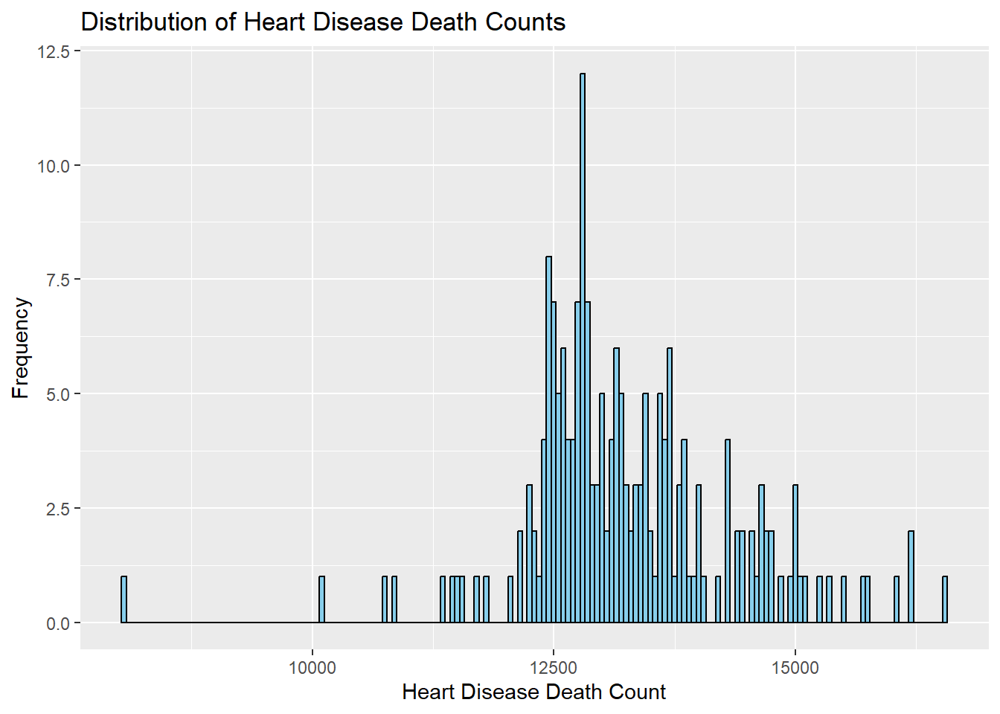
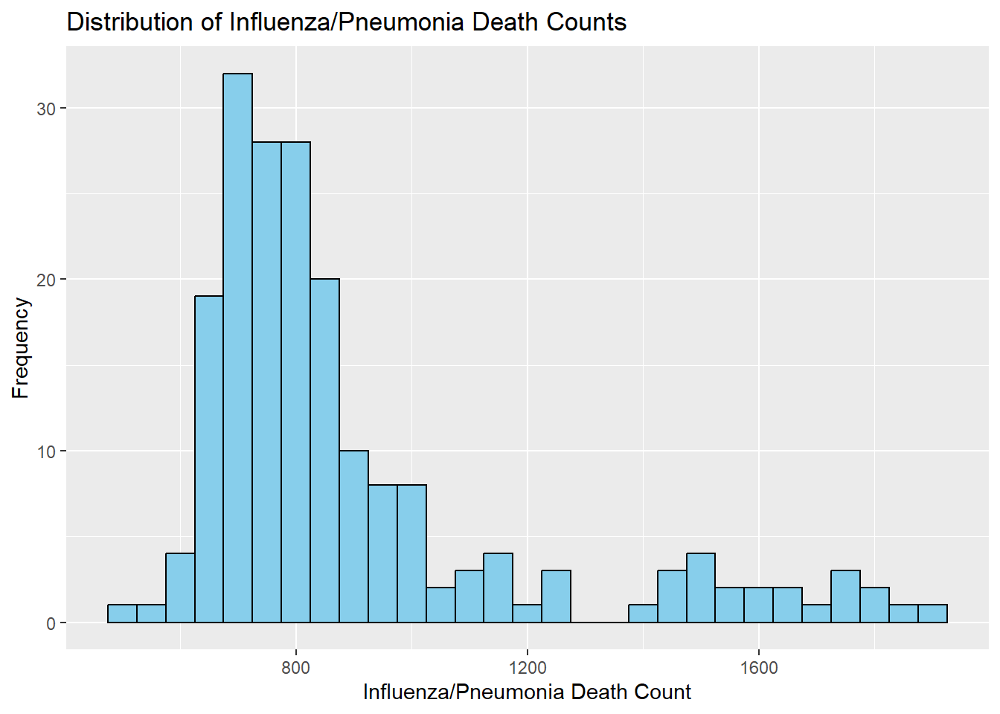
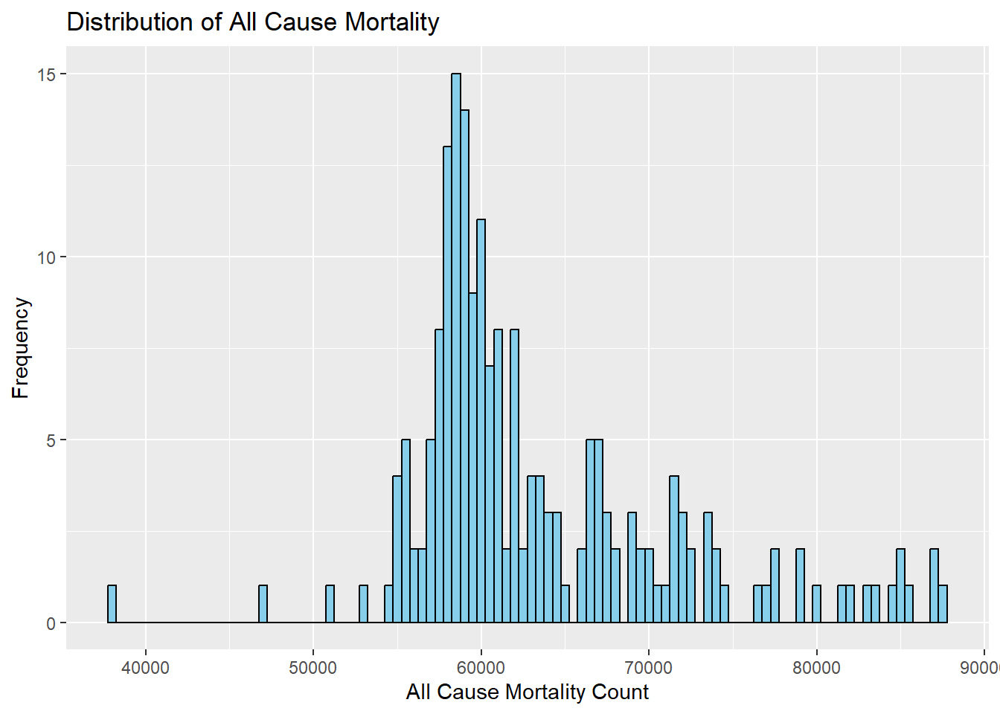
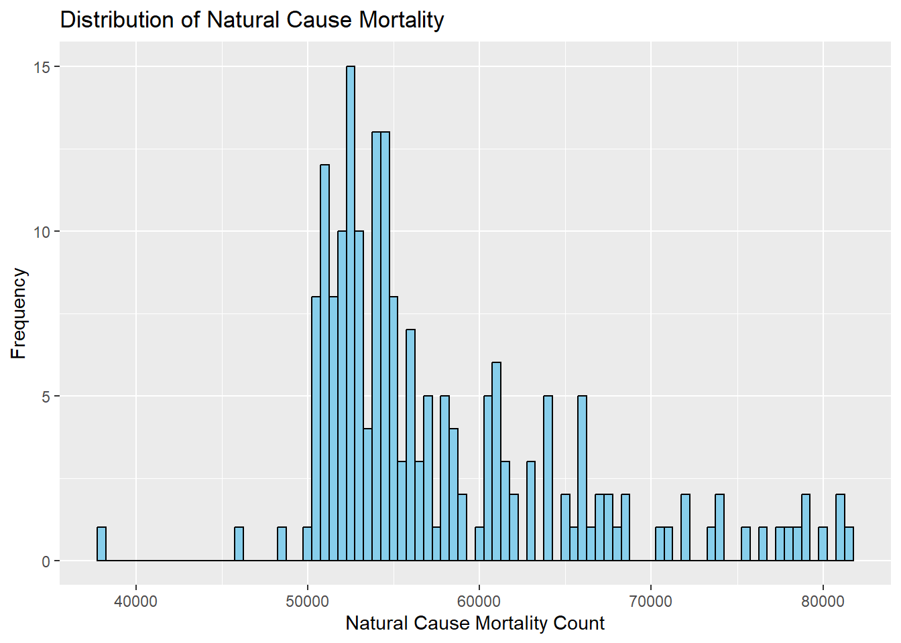
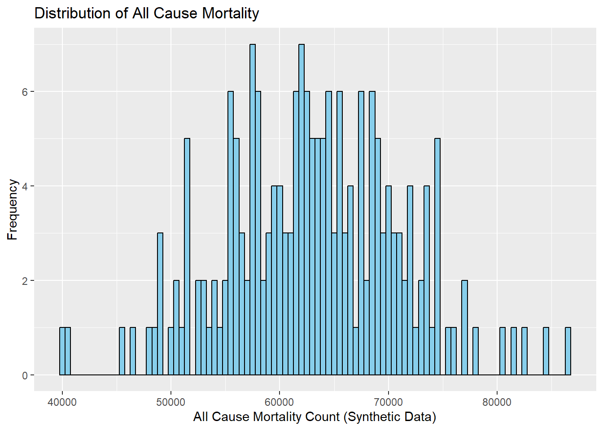
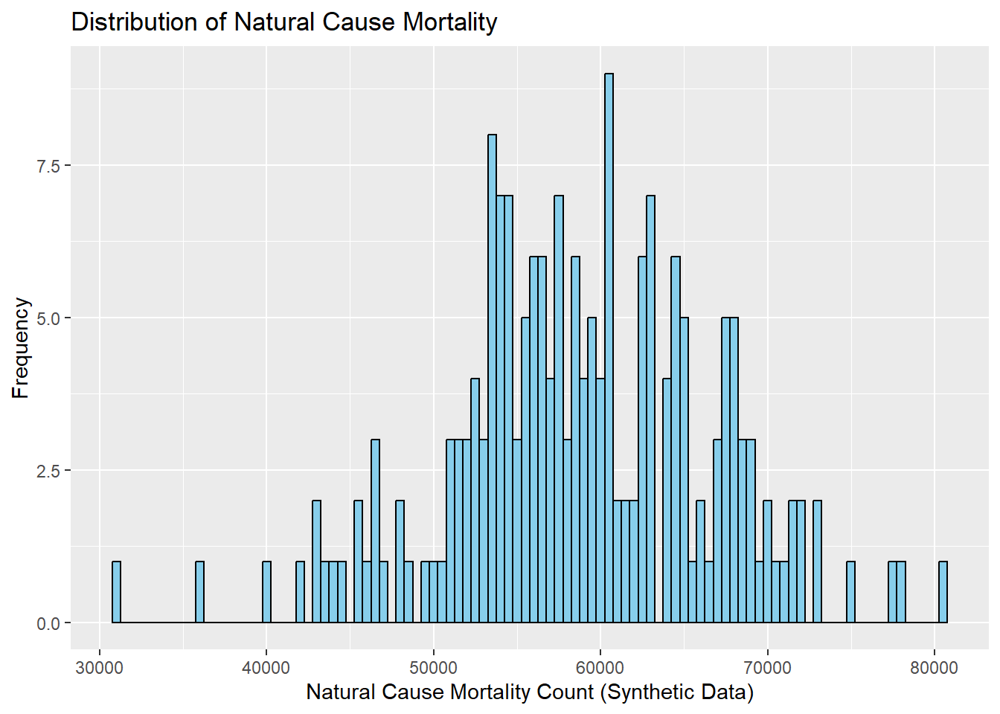
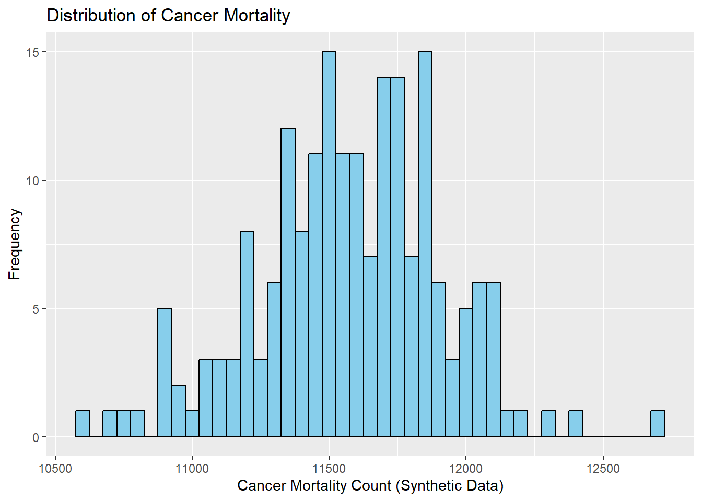
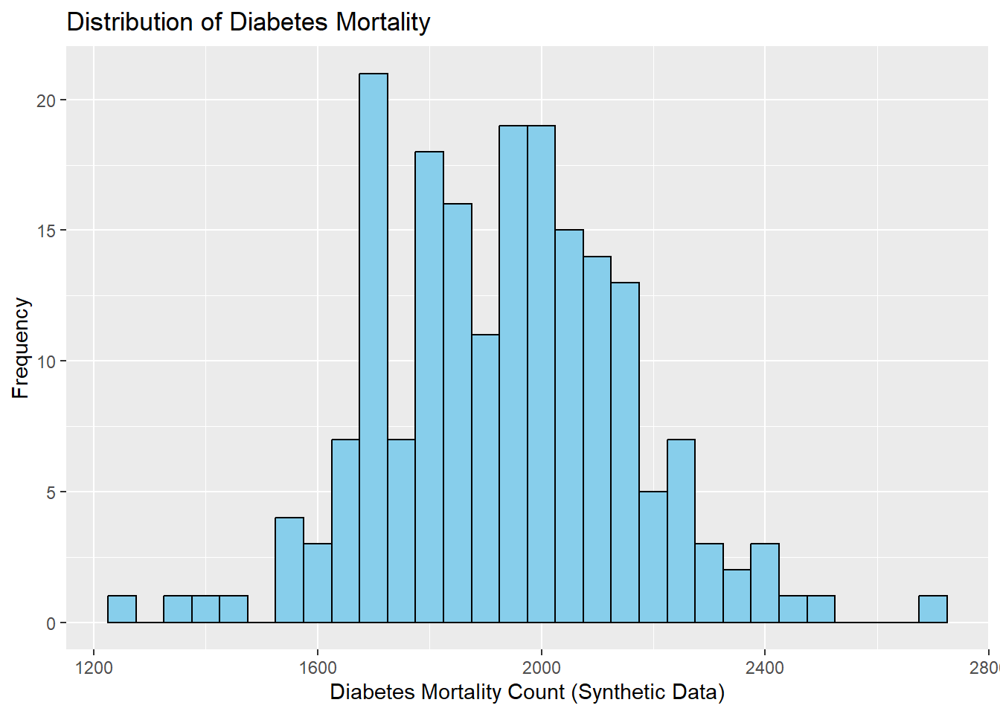
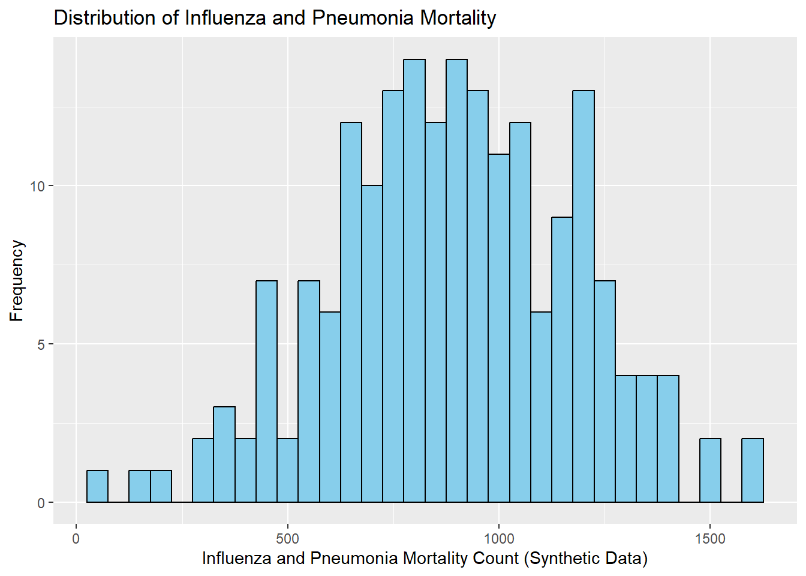

# Import dataset# path to data# note the use of the here() package and not absolute pathsdata_location <- here::here("cdcdata-exercise", "Weekly_Provisional_Counts_of_Deaths_by_State_and_Select_Causes__2020-2023_20250204.csv")data <-read.csv(data_location)%>%clean_names()# filterd for only the US (no states) and then also removed some diseases not of interest# also rename the columns because they are formatted weirddata_filtered <- data %>%filter(jurisdiction_of_occurrence =="United States") %>%select(1:7, 9:10, 12, 17) %>%rename(cancer_count = malignant_neoplasms_c00_c97,diabetes_count = diabetes_mellitus_e10_e14,influenza_pneumonia_count = influenza_and_pneumonia_j09_j18,heart_disease_count = diseases_of_heart_i00_i09_i11_i13_i20_i51 )
Summary Stats
Creation of summary statistics for the entire data set and for diseases of interest.
# summary statistics of all causes of deathsummary(data_filtered)
data_as_of jurisdiction_of_occurrence mmwr_year mmwr_week
Length:194 Length:194 Min. :2020 Min. : 1.00
Class :character Class :character 1st Qu.:2020 1st Qu.:13.00
Mode :character Mode :character Median :2021 Median :25.00
Mean :2021 Mean :25.21
3rd Qu.:2022 3rd Qu.:37.00
Max. :2023 Max. :53.00
week_ending_date all_cause natural_cause cancer_count
Length:194 Min. :37874 Min. :37824 Min. : 8675
Class :character 1st Qu.:58434 1st Qu.:52448 1st Qu.:11484
Mode :character Median :60628 Median :54836 Median :11618
Mean :63459 Mean :57802 Mean :11599
3rd Qu.:67060 3rd Qu.:61131 3rd Qu.:11781
Max. :87415 Max. :81622 Max. :12284
diabetes_count influenza_pneumonia_count heart_disease_count
Min. :1115 Min. : 495.0 Min. : 8034
1st Qu.:1800 1st Qu.: 715.2 1st Qu.:12621
Median :1895 Median : 792.0 Median :13104
Mean :1923 Mean : 896.4 Mean :13255
3rd Qu.:2014 3rd Qu.: 944.5 3rd Qu.:13727
Max. :2601 Max. :1916.0 Max. :16538
# mmean / sd of cancer deathsmean(data_filtered$cancer_count)
[1] 11598.83
sd(data_filtered$cancer_count)
[1] 328.8402
# mean / sd of diabetesmean(data_filtered$diabetes_count)
[1] 1922.701
sd(data_filtered$diabetes_count)
[1] 212.36
# mean / sd of heart diseasemean(data_filtered$heart_disease_count)
[1] 13254.74
sd(data_filtered$heart_disease_count)
[1] 1078.617
# mean / sd of influenza and pneumoniamean(data_filtered$influenza_pneumonia_count)
[1] 896.4278
sd(data_filtered$influenza_pneumonia_count)
[1] 296.1237
Graphs for Distributions
Creation of graphs to visualize the distribution of death count cases on a MMWR week-to-week basis. Surprisingly, they look almost normal with some skewing on some of the graphs.
# Distribution graph of cancer deathscancer_graph <-ggplot(data_filtered, aes(x = cancer_count)) +geom_histogram(binwidth =50, fill ="skyblue", color ="black") +labs(x ="Cancer Death Count",y ="Frequency",title ="Distribution of Cancer Death Counts" )print(cancer_graph)
# Distribution graph of diabetes deathsdiabetes_graph <-ggplot(data_filtered, aes(x = diabetes_count)) +geom_histogram(binwidth =50, fill ="skyblue", color ="black") +labs(x ="Diabetes Death Count",y ="Frequency",title ="Distribution of Diabetes Death Counts" )print(diabetes_graph)
# Distribution graph of heart disease deathsheart_disease_graph <-ggplot(data_filtered, aes(x = heart_disease_count)) +geom_histogram(binwidth =50, fill ="skyblue", color ="black") +labs(x ="Heart Disease Death Count",y ="Frequency",title ="Distribution of Heart Disease Death Counts" )print(heart_disease_graph)

# Distribution graph of influenza/pneumonia deathsinfluenza_pneumonia_graph <-ggplot(data_filtered, aes(x = influenza_pneumonia_count)) +geom_histogram(binwidth =50, fill ="skyblue", color ="black") +labs(x ="Influenza/Pneumonia Death Count",y ="Frequency",title ="Distribution of Influenza/Pneumonia Death Counts" )print(influenza_pneumonia_graph)

Synthesizing New Data
This section was contributed by Connor Norris.
#Additional exploratory analysis#Mean and SD of all-cause mortalitypaste("Mean of All-Cause Mortality:", mean(data_filtered$all_cause))
[1] "Mean of All-Cause Mortality: 63459.4175257732"
paste("SD of All-Cause Mortality:", sd(data_filtered$all_cause))
[1] "SD of All-Cause Mortality: 8007.63952760385"
#Histogram of all-cause mortalityggplot(data_filtered, aes(x = all_cause)) +geom_histogram(binwidth =500, fill ="skyblue", color ="black") +labs(x ="All Cause Mortality Count",y ="Frequency",title ="Distribution of All Cause Mortality" )

#Mean and SD of natural cause mortalitypaste("Mean of Natural Cause Mortality:", mean(data_filtered$natural_cause))
[1] "Mean of Natural Cause Mortality: 57802.3453608247"
paste("SD of Natural Cause Mortality:", sd(data_filtered$natural_cause))
[1] "SD of Natural Cause Mortality: 7776.10692380645"
#Histogram of natural cause mortalityggplot(data_filtered, aes(x = natural_cause)) +geom_histogram(binwidth =500, fill ="skyblue", color ="black") +labs(x ="Natural Cause Mortality Count",y ="Frequency",title ="Distribution of Natural Cause Mortality" )

#Synthetic data creationobs <-nrow(data_filtered) #Number of observationssyn <-data.frame(#Set non-mortality data to match the previous datasetdata_as_of =rep(as.Date('02/07/25', format ="%m/%d/%y"), obs),jurisdiction_of_occurance =rep('United States', obs),mmwr_year =c(rep(2020, nrow(filter(data_filtered, mmwr_year ==2020))),rep(2021, nrow(filter(data_filtered, mmwr_year ==2021))),rep(2022, nrow(filter(data_filtered, mmwr_year ==2022))),rep(2023, nrow(filter(data_filtered, mmwr_year ==2023)))),mmwr_week =c(1:nrow(filter(data_filtered, mmwr_year ==2020)),1:nrow(filter(data_filtered, mmwr_year ==2021)),1:nrow(filter(data_filtered, mmwr_year ==2022)),1:nrow(filter(data_filtered, mmwr_year ==2023))),#Simulate the mortality variables using normal distributionsall_cause =rnorm(obs, mean =mean(data_filtered$all_cause), sd =sd(data_filtered$all_cause)),natural_cause =rnorm(obs, mean =mean(data_filtered$natural_cause), sd =sd(data_filtered$natural_cause)),cancer_count =rnorm(obs, mean =mean(data_filtered$cancer_count), sd =sd(data_filtered$cancer_count)),diabetes_count =rnorm(obs, mean =mean(data_filtered$diabetes_count), sd =sd(data_filtered$diabetes_count)),influenza_pneumonia_count =rnorm(obs, mean =mean(data_filtered$influenza_pneumonia_count), sd =sd(data_filtered$influenza_pneumonia_count)),heart_disease_count =rnorm(obs, mean =mean(data_filtered$heart_disease_count), sd =sd(data_filtered$heart_disease_count)))
After synthesizing the new dataset, I will plot histograms of each of the mortality variables and compare to the original dataset.
#Plotting distributions#All-cause mortalityggplot(syn, aes(x = all_cause)) +geom_histogram(binwidth =500, fill ="skyblue", color ="black") +labs(x ="All Cause Mortality Count (Synthetic Data)",y ="Frequency",title ="Distribution of All Cause Mortality" )

#Natural cause mortalityggplot(syn, aes(x = natural_cause)) +geom_histogram(binwidth =500, fill ="skyblue", color ="black") +labs(x ="Natural Cause Mortality Count (Synthetic Data)",y ="Frequency",title ="Distribution of Natural Cause Mortality" )

#Cancer mortalityggplot(syn, aes(x = cancer_count)) +geom_histogram(binwidth =50, fill ="skyblue", color ="black") +labs(x ="Cancer Mortality Count (Synthetic Data)",y ="Frequency",title ="Distribution of Cancer Mortality" )

#Diabetes mortalityggplot(syn, aes(x = diabetes_count)) +geom_histogram(binwidth =50, fill ="skyblue", color ="black") +labs(x ="Diabetes Mortality Count (Synthetic Data)",y ="Frequency",title ="Distribution of Diabetes Mortality" )

#Influenza and pneumonia mortalityggplot(syn, aes(x = influenza_pneumonia_count)) +geom_histogram(binwidth =50, fill ="skyblue", color ="black") +labs(x ="Influenza and Pneumonia Mortality Count (Synthetic Data)",y ="Frequency",title ="Distribution of Influenza and Pneumonia Mortality" )

#Heart disease mortalityggplot(syn, aes(x = heart_disease_count)) +geom_histogram(binwidth =50, fill ="skyblue", color ="black") +labs(x ="Heart Disease Mortality Count (Synthetic Data)",y ="Frequency",title ="Distribution of Heart Disease Mortality" )
These distributions match the original data well in terms of their range of values and where the mean lies. However, there are some variations in the shape of the data. While the mortality data in the original dataset was largely normal, some outliers that were present in the original data were gave some of the distributions a slight skew. The simulations here incorporated those outlier values in the main distrubution, so the shape of the distributions differed in the synthetic data.